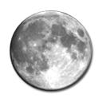
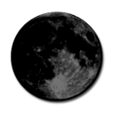

**Hover mouse over images for more information
| Sunday | Monday | Tuesday | Wednesday | Thursday | Friday | Saturday |
|---|---|---|---|---|---|---|
| 1 | 2 | 3 | 4 | 5 Cinco de Mayo Today we celebrate Cinco de Mayo with lots of drinking and partying. Please be safe and drink responsibly! |
6 Eta Aquarids Meteor Shower The Eta Aquarids is an above average shower, capable of producing up to 60 meteors per hour at its peak. Most of the activity is seen in the Southern Hemisphere. In the Northern Hemisphere, the rate can reach about 30 meteors per hour. |
|
| 7 Eta Aquarids Meteor Shower It is produced by dust particles left behind by comet Halley, which has known and observed since ancient times. The shower runs annually from April 19 to May 28. It peaks this year on the night of May 6 and the morning of the May 7. Best viewing will be from a dark location after midnight. |
8 | 9 | 10 Full Moon  The Moon will be located on the opposite side of the Earth as the Sun and its face will be will be fully illuminated. This full moon was known by early Native American tribes as the Full Flower Moon because this was the time of year when spring flowers appeared in abundance. This moon has also been known as the Milk Moon. |
11 | 12 | 13 |
| 14 | 15 | 16 | 17 | 18 | 19 | 20 |
| 21 | 22 | 23 | 24 | 25 New Moon  The Moon will located on the same side of the Earth as the Sun and will not be visible in the night sky. This is the best time of the month to observe faint objects such as galaxies and star clusters because there is no moonlight to interfere. |
26 | 27 |
| 28 | 29 | 30 | 31 |
**Hover mouse over images for more information
| Sunday | Monday | Tuesday | Wednesday | Thursday | Friday | Saturday |
|---|---|---|---|---|---|---|
| 1 | 2 | 3 | ||||
| 4 | 5 | 6 | 7 | 8 | 9 Full Moon The Moon will be located on the opposite side of the Earth as the Sun and its face will be will be fully illuminated. This full moon was known by early Native American tribes as the Full Strawberry Moon because it signaled the time of year to gather ripening fruit. It also coincides with the peak of the strawberry harvesting season. This moon has also been known as the Full Honey Moon. |
10 |
| 11 | 12 | 13 | 14 | 15 Saturn at Opposition  The ringed planet will be at its closest approach to Earth and its face will be fully illuminated by the Sun. It will be brighter than any other time of the year and will be visible all night long. This is the best time to view and photograph Saturn and its moons. A medium-sized or larger telescope will allow you to see Saturn's rings and a few of its brightest moons. |
16 | 17 |
| 18 | 19 | 20 Summer Solstice The North Pole of the earth will be tilted toward the Sun, which will have reached its northernmost position in the sky and will be directly over the Tropic of Cancer at 23.44 degrees north latitude. This is the first day of summer (summer solstice) in the Northern Hemisphere and the first day of winter (winter solstice) in the Southern Hemisphere. |
21 | 22 | 23 New Moon The Moon will located on the same side of the Earth as the Sun and will not be visible in the night sky. This is the best time of the month to observe faint objects such as galaxies and star clusters because there is no moonlight to interfere. |
24 |
| 25 | 26 | 27 | 28 | 29 | 30 |
**Hover mouse over images for more information
| Sunday | Monday | Tuesday | Wednesday | Thursday | Friday | Saturday |
|---|---|---|---|---|---|---|
| 1 | ||||||
| 2 | 3 | 4 4th of July Happy 241st Birthday to the United States of America! |
5 | 6 | 7 | 8 Full Moon The Moon will be located on the opposite side of the Earth as the Sun and its face will be will be fully illuminated. This full moon was known by early Native American tribes as the Full Buck Moon because the male buck deer would begin to grow their new antlers at this time of year. This moon has also been known as the Full Thunder Moon. |
| 9 | 10 | 11 | 12 | 13 | 14 | 15 |
| 16 | 17 | 18 | 19 | 20 | 21 | 22 |
| 23 New Moon The Moon will located on the same side of the Earth as the Sun and will not be visible in the night sky. This is the best time of the month to observe faint objects such as galaxies and star clusters because there is no moonlight to interfere. |
24 | 25 | 26 | 27 | 28 | 29 Delta Aquarids Meteor Shower The Delta Aquarids is an average shower that can produce up to 20 meteors per hour at its peak. It is produced by debris left behind by comets Marsden and Kracht. The shower runs annually from July 12 to August 23. |
| 30 Delta Aquarids Meteor Shower It peaks this year on the night of July 29 and morning of July 30. The crescent moon will set by midnight, leaving dark skies for what should be a good early morning show. Best viewing will be from a dark location after midnight. |
31 |